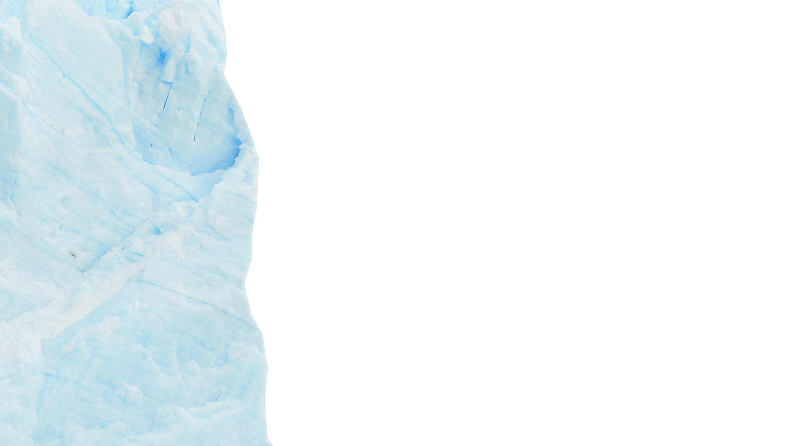
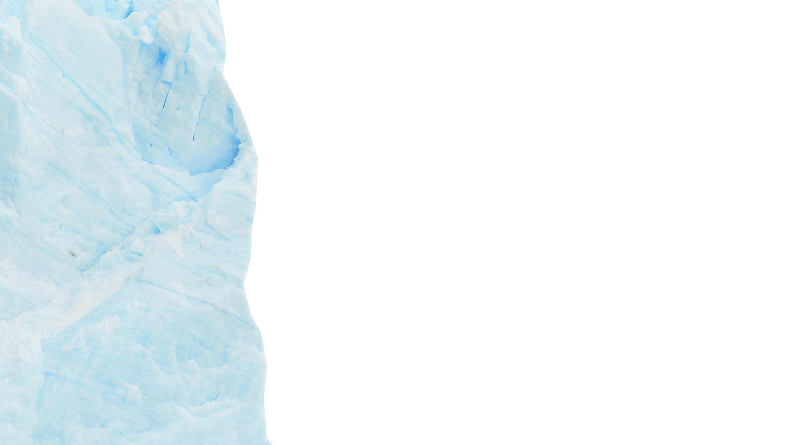
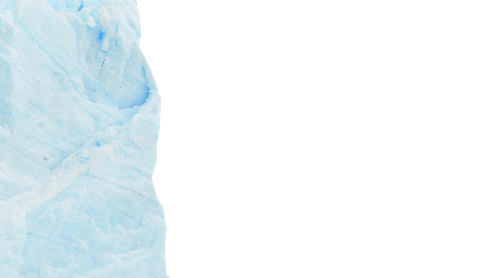
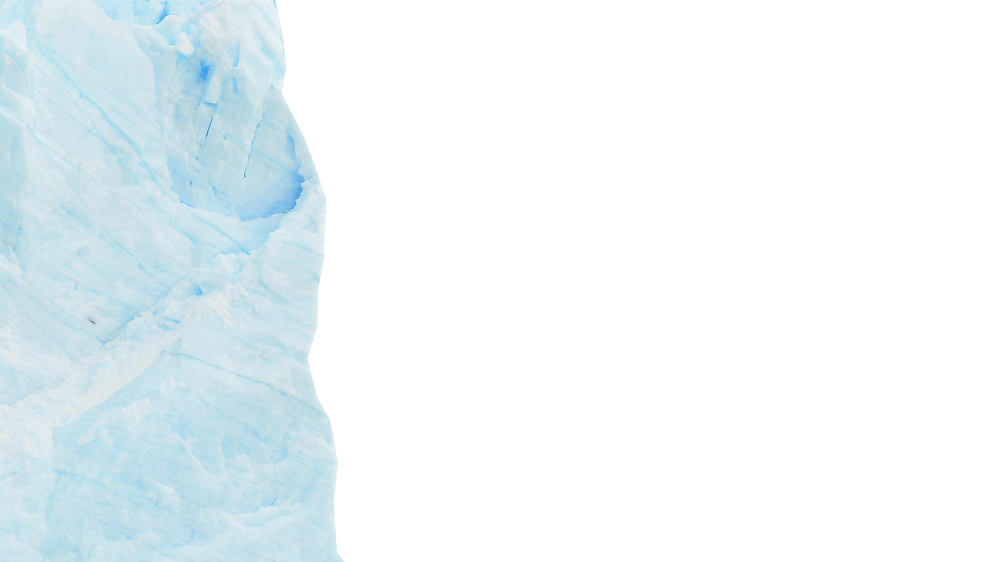

Mount Mauna


 

 

Mauna Kea adalah gunung tertinggi di Hawaii dengan ketinggian mencapai 4.207 meter di atas permukaan laut. Namun, jika diukur dari dasar laut, Mauna Kea adalah gunung tertinggi di dunia, dengan ketinggian total sekitar 10.210 meter.
Mauna Kea terletak di Pulau Hawai'i (juga dikenal sebagai Big Island), yang merupakan pulau terbesar di Kepulauan Hawaii.
Mauna Kea adalah gunung berapi perisai yang tidak aktif. Gunung ini terbentuk oleh aktivitas vulkanik di bawah Samudera Pasifik dan telah mengalami berbagai tahap erupsi.
Mauna Kea terkenal karena menjadi lokasi beberapa observatorium astronomi paling terkenal di dunia. Ketinggian gunung dan kondisi cuaca yang stabil menjadikannya tempat ideal untuk penelitian astronomi.
Mauna Kea memiliki berbagai ekosistem, termasuk hutan hujan tropis di ketinggian rendah dan tundra alpin di ketinggian tinggi.
Mauna Kea dianggap sebagai tempat suci bagi masyarakat asli Hawaii. Gunung ini memiliki banyak makna spiritual dan budaya bagi masyarakat setempat.
Meskipun terletak di daerah tropis, Mauna Kea sering memiliki salju di puncaknya selama musim dingin karena ketinggiannya yang tinggi.
Di puncak Mauna Kea terdapat beberapa danau gunung yang dikenal dengan habitat langka, termasuk beberapa spesies yang hanya ditemukan di wilayah tersebut..
Mauna Kea populer di kalangan wisatawan dan pendaki. Namun, pendakian ke puncak gunung membutuhkan izin karena kondisi cuaca yang bisa berubah-ubah dan risiko ketinggian.
Karena kepentingan budaya, ilmiah, dan ekologisnya, ada upaya untuk melindungi Mauna Kea dari kerusakan lingkungan dan pembangunan yang berlebihan. Beberapa komunitas asli Hawaii telah menentang pembangunan observatorium baru di puncak gunung ini.